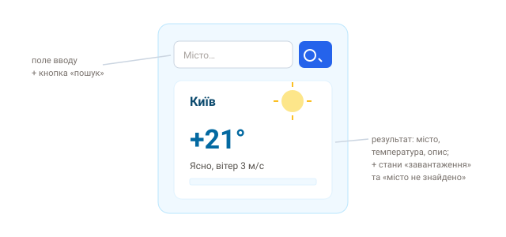

Практика: асинхронність
Проміси, async/await, fetch. Використай публічний API
JSONPlaceholder на
CodePen.
Завдання 1. Завантажити й вивести дані
Через fetch + async/await отримай список користувачів з
/users і виведи їхні імена (у консоль або на сторінку). Обовʼязково перевір
відповідь (res.ok) і обробі помилку через try/catch — мережа
може впасти або сервер повернути не-200. Це базовий шаблон будь-якого запиту.
Рішення
async function loadUsers() {
try {
const res = await fetch('https://jsonplaceholder.typicode.com/users');
if (!res.ok) throw new Error('HTTP ' + res.status);
const users = await res.json();
users.forEach((u) => console.log(u.name));
} catch (e) {
console.error('Помилка:', e.message);
}
}
loadUsers();Завдання 2. Паралельні запити
Завантаж одночасно користувача (/users/1) і його пости
(/posts?userId=1) та виведи їх разом (напр. «Ім'я має N постів»). Ключове —
запустити обидва запити паралельно через Promise.all, а не по черзі
з двома await поспіль: так замість суми часів отримаєш час найповільнішого.
Підказка
Promise.all([...]) запускає запити паралельно.
Рішення
async function loadUserData(id) {
const [user, posts] = await Promise.all([
fetch(`https://jsonplaceholder.typicode.com/users/${id}`).then((r) => r.json()),
fetch(`https://jsonplaceholder.typicode.com/posts?userId=${id}`).then((r) => r.json()),
]);
console.log(user.name, 'має', posts.length, 'постів');
}
loadUserData(1);Завдання 3. Погодний віджет (виклик)
Зроби віджет: поле вводу міста й кнопку, що завантажує й показує погоду з відкритого API (напр. Open-Meteo чи OpenWeatherMap). Виведи назву міста, температуру й короткий опис. Обовʼязково передбач три стани: «завантаження…», успішний результат і помилку («місто не знайдено» / збій мережі). Орієнтуйся на макет нижче. Це підготовка до мілстоун-проєкту «Погода з API».

Підказка
Логіку запиту винеси в async-функцію, яку кличе click кнопки. Стан «завантаження» вмикай перед await, а вимикай у finally. Багато погодних API просять безкоштовний ключ — тримай його в межах навчального прикладу.